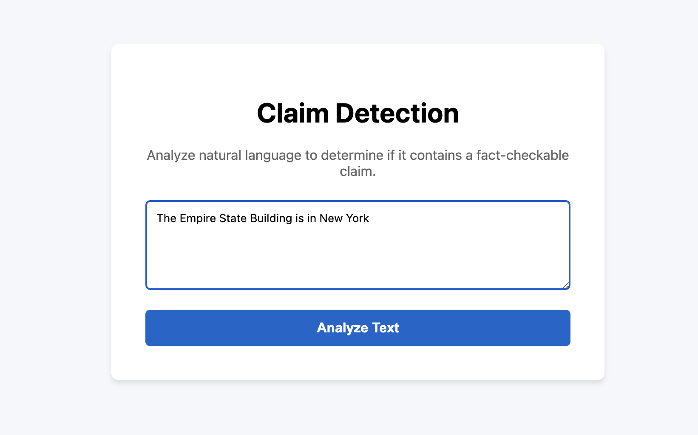

Claim Detection
nlp, fine-tuning · servingThis project was built as a taken home exam for an interview project, the task was to fine tune a claim detection model and make it deployment ready.
Data
The most important part of any ML model is the data that it is trained on, to ensure that I had an equal representation of claims and non-claims I sampled from two datasets ClaimBuster & Feverclaims making sure that I had an equal number of both samples. This allowed my model to see a wide variety of examples of how both claims and opinions look.
Model
Once the data was selected the next step was to choose what model to train, because I was tasked with a classification task that I wanted to train locally I choose a small BERT model Distilbert. This model was locally trained on my macbook and achieved a 94% accuracy on the validation set.
Architecture
Once the model was trained I needed a way for users to interact with it, for inference I wrapped the model in a fastAPI endpoint that could be used for inference, to interact with this endpoint I sent a post request from my frontend via Flask that allowed the user to input there sentence and returned whether or not it was a claim (pictured below). To save on processing time and power a local cache was also saved to save computations on already inputed sentences. For a full architecture digram and description check out the README of the github.


Serving
The final step of this project was to allow it to be served on the internet as a public demo, due to cost constraints I didn't want to pay to host the model but thankfully I have a personal Raspberry PI 5 that I host some random scripts on with plenty of space to host this backend so both the FastAPI endpoint and the model weights are stored on my Pi served through a Cloudflare tunnel for security purposes. For the frontend Github pages was used for easy and free hosting. This Raspberry PI currently lives in my apartment closet so if any of my servers are down it's likely due to a loss of internet or overheating in my apartment.